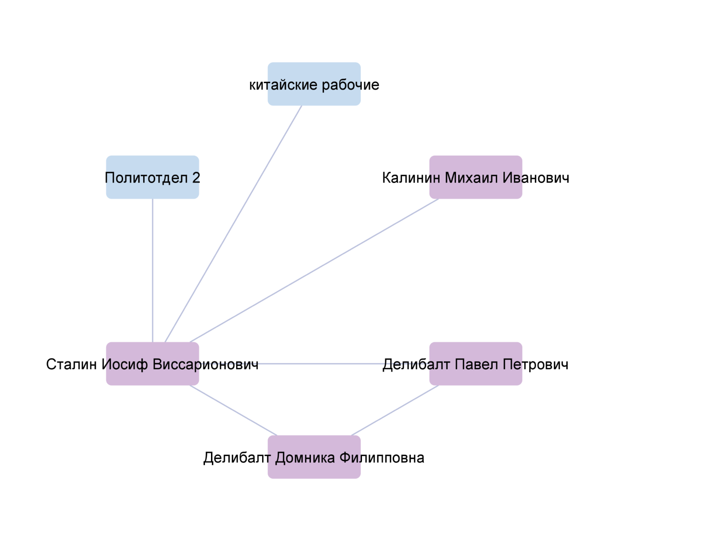

Наше исследование
Мы провели исследование по оцифровке и анализу русскоязычных телеграмм методами компьютерной лингвистики и Digital Humanities. Для ресёрча мы взяли телеграммы из Портала открытых данных Министерства культуры РФ, а также из семейных архивов, музеев, форумов коллекционеров и даже блошиного рынка.
Мы выяснили, что с течением времени круг тем телеграмм сужался по мере развития альтернативных средств коммуникации,
как мы и предполагали изначально. Для этого мы применили несколько метрик:
 Для начала мы просто измерили количество различных тем, которые обсуждались в
телеграммах каждого отдельного десятилетия..
Для начала мы просто измерили количество различных тем, которые обсуждались в
телеграммах каждого отдельного десятилетия..
 ...а затем применили меру энтропии Шеннона, суть которой заключается в том,
чтобы измерить разнообразие выборки (в нашем случае, разнообразие её тем), вне зависимости от её размера.
...а затем применили меру энтропии Шеннона, суть которой заключается в том,
чтобы измерить разнообразие выборки (в нашем случае, разнообразие её тем), вне зависимости от её размера.
 Более того, если разделить темы по общему смыслу на пять категорий (макро-тем), можно заметить,
что с течением времени люди перестали делиться новостями с помощью телеграмм.
Более того, если разделить темы по общему смыслу на пять категорий (макро-тем), можно заметить,
что с течением времени люди перестали делиться новостями с помощью телеграмм.
Таким образом, мы постепенно перешли к тому, что телеграммы стали использоваться только для поздравлений с какими-нибудь личными достижениями или семейными праздниками.
Однако наше другое предположение о том, что когда случалось какое-либо историческое событие, телеграммы отправлялись чаще, не оправдалось.

В качестве ключевых исторических моментов мы выбрали даты Октябрьской революции (1917), Великой Отечественной войны (1941-1945), полёта Гагарина в космос (1961) и распад Советского Союза (1991); однако мы не выявили какой-либо корреляции реальных исторических прецедентов с частотностью отправки телеграмм.
Также мы исследовали упоминаемость известных личностей и их круг взаимодействия в телеграммах, так как предполагали, что имена общественных и политических деятелей могут упоминаться как в официальной, так и в личной переписке, и нередко это может быть связано со смертью деятеля.
Так, например, мы сделали сетевой анализ взаимодействий и упоминаний Иосифа Виссарионовича Сталина в период с 1919 по
1950 год по мере того, как нарастал градус политических репрессий и увеличивался список “врагов народа”.
Из этого анализа мы выяснили, что имена Сталина и Ленина часто упоминаются вместе как синонимы или даже как символы советской власти в целом. Например, когда человека поздравляют с
получением награды, ему желают трудиться дальше и продолжать дело “великих Ленина и Сталина”.

 Персоналии и другие
Персоналии и другие
 Организации и коллективы
Организации и коллективы
 Упоминаемые персоналии
Упоминаемые персоналии
 Также среди телеграмм, отправленных в 1946 году, есть и телеграмма от
Центрального вече народной молодёжи Югославии с выражением соболезнований по поводу смерти Калинина. Как известно из истории, отношения между СССР и
Югославией сильно ухудшились в 1948 году из-за разногласий Сталина и лидера коммунистической партии Югославии Иосипа Броз Тито, поэтому представить
подобную телеграмму всего на пару лет позже было бы трудно.
Также среди телеграмм, отправленных в 1946 году, есть и телеграмма от
Центрального вече народной молодёжи Югославии с выражением соболезнований по поводу смерти Калинина. Как известно из истории, отношения между СССР и
Югославией сильно ухудшились в 1948 году из-за разногласий Сталина и лидера коммунистической партии Югославии Иосипа Броз Тито, поэтому представить
подобную телеграмму всего на пару лет позже было бы трудно. В частности, мы узнали, что, несмотря на официальную реформу
грамматики в 1917 году, в личной переписке дореволюционной орфографией продолжали пользоваться до тридцатых годов двадцатого века.
В частности, мы узнали, что, несмотря на официальную реформу
грамматики в 1917 году, в личной переписке дореволюционной орфографией продолжали пользоваться до тридцатых годов двадцатого века.